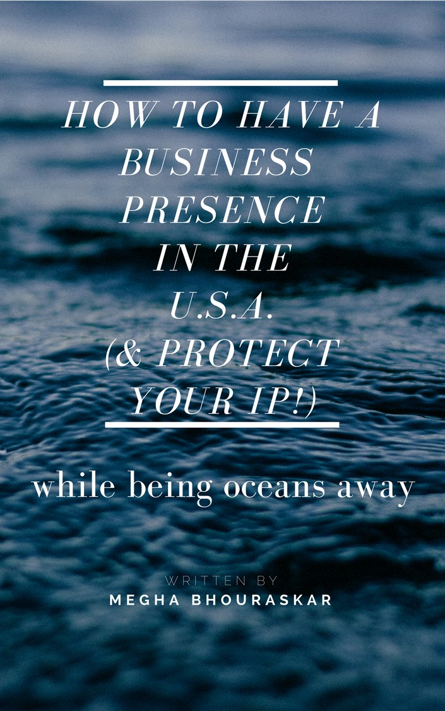

Own an American companywithout leaving home.
A free course from a New York attorney of twenty-five years, walking you from where you are now to a U.S. company that is genuinely yours. No visa. No relocating. No minimum capital. No American partner.
Twenty-five years in New York. Three books. Clients who handed her power of attorney and stayed more than a decade.
You cleared the hard part years ago. So why is the dream still on the shelf?
There is a dream you take down off the shelf, look at, and put back.
It has a domain name you bought two years ago. A folder somewhere. Half an application. It lives after eleven at night when the house has gone quiet and nobody is watching, and most of the people who love you do not know it exists. When it comes close to being noticed, you make some excuse about work.
You have done this for years now.
Let me say the part your family will not say out loud.
You are not stuck because you lack the education. You settled that question long ago and it cost you something to settle it. You are not stuck for want of intelligence, or discipline, or an idea. You are excellent at the thing you are paid for and silent about the thing you actually care about, and both of those come from the same root.
You were taught to be flawless in public, and taught not to be noticed. That was never a defect in you and it was never weakness in your parents. It kept people safe for a very long time, and it is still running.
And there is a third thing underneath, which took me most of my life to say plainly. It is not failing in front of people that frightens you most.
The fear of exposure on our vulnerabilities is bad enough, but for me, the fear of exposing my brilliance is even harder—because I then feel people will think I'm showing off or that I'm an imposter.
Megha, in her own words
Being good at something, out loud, on purpose, is the exposure.
So you tolerate it. Another quarter. Another year. The salary is good, the work is fine, and there is genuinely too much to lose.
That word matters to me. Tolerating.
We live through life tolerating what we tolerate, and we don't even realize what we're tolerating because we get so used to it, we kind of go numb.
Megha, in her own words
I know that feeling, my friend. I have lived the gap between your dream and where you are.
The version where nobody loses
Every version of this you have imagined so far required somebody to lose. This is the one that doesn't.
This is the version where nobody pays for it but you, and what you pay is some evenings.
-
Leaving would mean your parents lose the child they spent a generation buying this outcome for.
Your parents do not lose you, and what they get to say about you gets better.
-
Quitting would mean your family loses income that other people may be living on.
You keep the job while you build. Same house, same country, same desk.
-
Moving to America would mean your country loses one more of the people it has been working hard to keep.
India keeps the person and gains what your company brings home.
Those calculations were never cowardice. You ran them and they were correct. None of them apply here.
Nobody has to be defied, nobody has to be told, and nothing has to be announced until you decide it should be.
It is private. It is reversible. And it does not need anyone's blessing.
What is actually true
Almost everything you believe is stopping you was never true.
Nine assumptions keep founders in India out of the American market. Megha has spent twenty-five years watching them fall apart on contact with the actual process.
“I need a visa, a green card, or citizenship.”
You do not. Your immigration status is not the gate. A founder who has never held an American passport can both form and fully own a U.S. company.
“I need an American partner to front it for me.”
No. You do not hand a stranger equity to get in the door. There is a separate and much smaller thing that trips people up: a U.S.-based person, usually your attorney or accountant, is typically needed as a bank signatory. That is an administrative role. They do not own a piece of what you build.
“I need capital sitting in a bank first.”
There is no minimum capital required to form a U.S. entity, no minimum balance to keep it alive, and no minimum revenue you have to earn. The wall you are picturing is a story.
“I would have to fly to America.”
The trip you have been dreading is not part of the process. The entity, the account, the address, all of it can be created and run from your home.
“Opening a U.S. bank account would take forever, and I would have to be standing there.”
You do not have to be standing there. The rest of this one deserves more honesty than it usually gets. Banks have tightened hard on foreign-owned companies, and founders are being rejected over address and documentation requirements nobody warned them about. That is a real wall and not a rumoured one. What gets through it is a U.S.-based signatory and a bank that already knows the person walking you in. Megha has been opening these accounts for clients for twenty-five years and has the relationships that come with that.
“There is a right time of year to do this, and I have missed it.”
No such window exists. No season, no filing period to wait for, no reason today is worse than March.
“I would owe American taxes personally, just for owning it.”
Owning a U.S. entity does not by itself make you personally liable for U.S. taxes. How the company is taxed depends on how it is structured, which is exactly the sort of thing you coordinate between your advisors at home and in the States rather than guess at.
“If I form in one state I am stuck there.”
You pick a state to start in. If the business grows past it, you register for authority elsewhere. Forming somewhere is a starting point rather than a fence.
And one that runs the other way. “An American company will help me move to America.”
It will not, and anyone implying otherwise is selling you something. Owning a company and having the right to live or work in the United States are two separate systems that share no paperwork. If your real goal is to emigrate, this is not that path, and you should not spend a rupee as though it is. Everything here assumes you want to stay exactly where you are.
It is in fact, very simple; much simpler than you can imagine. Megha, in her own words
And simple here does not mean somebody on the inside made it simple for you. It means the process is published, the forms are the same forms everybody files, and not one step of it turns on knowing the right person in the right department. That is the actual difference, and it is the part worth crossing an ocean for.
What this actually is
The entire course is free. That is not a discount, and there is no version of it you have to buy.
Three modules. Twenty-three lessons and an introduction. The complete path from I have been thinking about this for years to I own a company in the United States.
Free, complete, and yours to keep whether you ever pay for anything or not.
The reason is simple enough to say out loud. Information stopped being the scarce thing a while ago. You could assemble most of Module 2 from a search bar and enough weekends, and here is the part nobody says to you: you already have. You have watched the videos. You have read the threads and saved the comparisons. You could probably explain the difference between an LLC and a C-Corp to a friend tomorrow.
And nothing is filed.
So the obstacle was never knowledge. What you cannot download is a sequence, a person who answers when step four goes sideways at eleven at night, and a room of people building the same thing in the same month you are.
People pay to be in the room with you, not to unlock more videos. The thesis, signed off 3 July
The teaching is free. If the free thing feels like a teaser the whole idea collapses. So it is not a teaser.
The whole road
The whole road, in three parts, so you can see where it ends before you take one step.
Permission to Build in America
Seven lessonsBefore the paperwork, the belief. This module is about the voice that says this is not for someone like me, where it came from, and how to stop waiting for a turn nobody is going to hand you.
It runs on SHINE, the five-step framework Megha developed and teaches, aimed squarely at this one leap.
- —The dream you keep on the back shelfWhere the module starts, before any of the letters.
- SWhose dream is it, reallySoul-aligned. Your values, not the ones you inherited.
- HYour difference is your advantage in AmericaHonour your uniqueness. The part that felt like a handicap is the business.
- IIntuition and faith, used as an actual strategyNot a feeling. A decision-making tool she uses on purpose.
- NYou do not have to burn out to build something bigNourish yourself as a priority, not as a reward.
- EStop dimming your light and claim your placeEmbody your brilliance. Nobody benefits if you hide it.
- —Permission granted. Now the map.And the map is Module two.
Why this module is first and not third: the paperwork was never what stopped you. Twenty-five years of clients told her the same thing in different words.
Your Business Presence in America
Nine lessonsSix steps take you from nothing to a working American company. This module walks five of them end to end, in order, in plain English, with nothing assumed.
- 1
Form your U.S. entity
A corporation or an LLC, in a state chosen for your situation. Once it exists you are verifiable on a government register.
- 2
Get your U.S. tax ID
The number the company files under. A founder who has never held an American passport can obtain one.
- 3
Open your U.S. bank account, from home
Run it online, across the ocean. This is the step with a real wall in front of it, and the one where knowing the person who walks you in matters most.
- 4
Get your U.S. address, and become real in America
It goes on your contracts, your website and your invoices. This is most of what makes an American customer treat you as a supplier rather than an offshore vendor.
- 5
Meet your company's ongoing obligations
This one moves. It changes year to year and it turns on your own situation, which makes it the worst possible candidate for a video that sits still. It runs live in The Room instead, with people who do this every day.
- 6
Structure the company and handle tax, with the right advisors beside you
Coordinated between your advisors at home and in the States, rather than guessed at.
Steps one to four get you real. Five and six keep you real.
Protect What You Build
Seven lessonsThe moment you are worth copying, somebody copies you. This module is about owning your name, your work and your idea in America, and then turning what you own into money.
There is a harder question inside it, and most people building something after eleven at night have never thought to ask it. What you are making in those hours may not legally be yours. That was settled by an agreement you signed on your first day and have not opened since.
Trademark
Protects the name and the mark that tell a customer the work is yours.
Your brandCopyright
Protects the thing you actually made, in the form you made it.
Your workPatent
Protects the invention itself, which is a different and much narrower door.
Your idea- The moment you are valuable, they will copy you
- Your brand is your front door: trademarks
- Registering a trademark, in four steps
- Your code and your content: copyright, and who actually owns it
- Inventions, and a straight word about patents
- Turning what you own into money that arrives while you sleep
- You built it. Now it stays yours.
Twenty-three lessons and an introduction, all free, all yours. The lessons are short and made for a phone on a commute, because that is honestly how you are going to watch them.
Both halves
Everything you have watched covers the American half.
There is an Indian half. Owning a foreign company as an Indian resident is a regulated act, and most people meet that fact after they have already formed the company.
The American half
What the company owes, there
The myths above tell you what you will not owe personally. They say nothing about what the company itself has to file every year, on its own account, in America.
That is a separate set of obligations with its own calendar, and it does not go away because you are not standing in the country.
The Indian half
What you owe, here
It has a name, it has filings, and it has penalties. Open any video about U.S. incorporation and read down the comments. Someone is always saying it, usually with some heat, often in Hindi.
Neither half is going to be pretended away here, and you are not getting half a map.
A course that walks you to the edge of this and stops is worse than one that never started.
How this works
Three steps, and the first one takes about forty seconds.
You have been researching this a while. Maybe a long while.
There is a folder of bookmarks somewhere. A couple of videos you watched twice. A saved thread arguing about Delaware and Wyoming that you have gone back to more than once. None of it is filed.
That is not laziness, whatever you have been telling yourself, and it is not really fear either. You are waiting to feel certain, and certainty is not what is coming. It never arrives before the first step. It arrives somewhere around the fourth.
So the first one is built to be impossible to get wrong.
- 1
Join
Your email. No card, nothing to cancel, no call with anybody.
- 2
See the whole road
All three modules open at once. Nothing drips, nothing unlocks later.
- 3
Take step one
And then the next, at whatever speed your life actually allows.
What you walk away with
By the end you own something real, and you can point at it.
- A U.S. company that is genuinely yours, formed in a state chosen for your situation rather than for somebody's convenience
- A tax ID, and a business bank account you can open and operate from home
- A U.S. address that goes on your contracts, your website and your invoices, which is most of what makes an American customer treat you as real
- An invoice paid in dollars, into an account that belongs to your company
- Your brand and your work registered before somebody else gets there first
- A plain answer, every single time, when somebody tells you you need a lawyer for that
- A different reply to what do you do. You stop saying you work for an American company and start saying you own one, and the people who spent a generation getting you here will hear that difference before you finish the sentence
- And the one that is hardest to buy anywhere: the settled, boring, permanent belief that you were always allowed to want this.
Why her
Twenty-five years on the other side of the gap you are standing at.
Megha Bhouraskar was born in New York and grew up between New York and India. She went to Barnard and Columbia. She made partner in six years at an all-white-male Manhattan firm, which was rare then and is not common now.
Then she left.
My law career was chosen for me, not by me. Megha, in her own words
She has a scene she tells about the night it caught up with her. The firm took her to a steakhouse to celebrate her making partner. Somewhere in the middle of dinner she went to wash her hands, looked up into the mirror, and felt ugly.
She had just achieved more than anyone expected of her. What she could not explain to herself was why it felt like nothing, and the answer turned out to be that what those men were celebrating had very little to do with what she actually valued.
She was thirty-something, at the top of her profession, and quietly certain she was in the wrong life.
She left the security of the firm, and then left a second partnership too, because her partner could not understand her clients.
What she had instead of a pedigree was that she belonged to both countries. She leaned on it. Indian film and music producers began hiring her for work she had not done before.
They even trusted me to pay me to learn what I didn't know— such as, I knew nothing about copyright, trademark, distribution, entertainment... and I launched 'Bollywood' in America and rode their wave of success.
Megha, in her own words
They paid her to learn. Her difference was not a handicap she had to overcome before America would take her seriously. It was the entire business.
Twelve years ago she started her own practice, built to her own values, as a divorced single mother raising her son in downtown Manhattan.

How To Have a Business Presence in the U.S.A. — the spine of Module 2She is formally trained at the coaching half of it, which is rarer than it should be. She certified through Evercoach by Mindvalley, was coached for years by Fabienne Fredrickson, and went through Tony Robbins' programs.
The certification was not a weekend and a PDF. It ran in rotating triads where you take turns being the coach, being coached, and sitting as the observer whose job is to critique the person teaching. She was critiqued live, repeatedly, while teaching.
Most people selling transformation online appointed themselves. She got graded.
For twenty-five years her clients have been people you would recognise.
- An internationally known fashion designer
- A Bollywood studio's American arm
- A Grammy-winning artist
- A textile group listed in Mumbai
- First-generation founders nobody has heard of who became, in her word, family
Several handed her blanket power of attorney over their American affairs. Most have stayed more than ten years.
This July she spent four days in front of a camera recording this course. Four days of talking without interruption about what she actually believes, in a room where nobody was judging her.
When it ended she could not settle back into her ordinary life. What surfaced was not pride in the footage.
I've been doing all this for so many years that I don't really enjoy or doesn't light me up. How is that possible?
Megha, in her own words
Twenty-five years in, at the top of a practice she built herself, four days in a safe room showed her exactly what she had been tolerating. That is the entire thesis of Module 1, and it happened to the woman teaching it, this summer, by accident, while she was making the thing you are about to watch.
If you want to know whether any of this works, that is the most honest answer available.
Proof
The word that keeps recurring in twenty-five years of testimonials is “family.”
“As a small business, we can't have in house legal counsel or engage a large multi-disciplined firm on retainer. Megha has been invaluable. She has an excellent business acumen. Megha is quick to understand the issues and offer practical, sound, legal and business advice.”Frank Pedicini
Her clients do not tend to leave. Many have been with her more than a decade, several handed her power of attorney over their American affairs, and one has not lived in the United States in over fifteen years and runs everything through her.
Three or four short phone videos from early members, captured during the September soft launch, saying what they were afraid of before they started. One video of a real person outweighs every word on this page.
The next step
A place where you can say it out loud.
Most of the people in your life still do not know about this. That is not going to change on a Tuesday, and nothing about the room asks it to.
Before it is a membership or a set of calls, that is what the room is. Nobody in it works with you. Nobody in it is going to bring it up at a family function. Everybody in it is building the same thing, at roughly the same time, and nobody needs the difficulty explained to them.
I feel very safe with the two of you. I can say whatever is on my mind... but how many people have that? And so if we can provide that feeling for people...
Megha, in her own words
The course stays free and it stays complete. What a course cannot do is answer you.
- Two live sessions with Megha every monthOne leans business, one leans protecting what you own. Questions are collected ahead so nobody gets put on the spot, and there is an open window at the end. Days and times rotate, so one time zone is never a permanent lockout.
- A toolkit for every moduleTemplates, checklists, walkthroughs. The parts that turn a lesson you understood into a document you actually filed.
- Your cohortPeople who started the week you did, working the same steps.
- Guest expertsIncluding an outside attorney for the specific legal questions Megha is not able to answer for you directly.
- The compliance work, both sides of itRun live with people who do this every day. The American filings your company owes each year, and the Indian side of owning a foreign entity. This is step five, and it is here rather than in a video because it moves.
- The mindset work in fullThe free modules give you a taste. This is where it gets worked.
Free members hear first.
Join the founding list No card, nothing to cancel. You stay in the free course either way.Questions
The things people actually ask.
I do not have a visa. Does that stop me?
No, and this is the single most common thing that keeps good founders out. Owning an American company and living in America are different things and almost everybody runs them together. You can form it, bank it, and run it from where you are sitting right now.
Is it really my company if I am sitting in Pune?
Yes, and I know where the question comes from, because somebody has probably said the opposite to you in a comment section. Ownership is a legal fact and it does not carry a postcode. Your name is on the formation documents, you hold the equity, you control the bank account, and you decide what the company does.
The people who say that's not a real company, that's just a job are describing something else entirely, which is working as a contractor for an American business. That is a genuinely different thing, and Module 2 is about making sure you end up on the right side of it.
How much money do I actually need?
Less than the number in your head. There is no minimum capital required to form a U.S. company and no minimum balance to keep it. There are real third-party costs to set things up, and Module 2 walks them so you are not guessing, but the wall you are imagining does not exist.
Will American customers take me seriously if I am not there?
Some of them will not, and I am not going to tell you that is in your head. There is real bias in that market and you have most likely felt it already.
What I will tell you is where it attaches. It attaches to offshore vendor, and it stops attaching once you are an American company. Your entity is findable on a government register. Your address sits on the contract. Your invoices arrive from a U.S. bank. Those are not reassurances, they are the specific instruments that move you off somebody's outsourcing line and onto their supplier list.
What about the India side of this?
It is real, most courses skip it, and we do not. Owning a company abroad while you live in India carries obligations here as well as there, and people find that out late and expensively. The course names what it is and who handles it, and the live work on it happens in the room with advisors who do it professionally.
Should I form an LLC or a corporation?
It depends on your situation, and anyone answering that instantly is guessing. The two are taxed differently, and which fits depends on ownership, control and what you need on both sides of the ocean. Module 2 gives you the actual factors so you can have that conversation properly with your advisors instead of nodding through it.
Is this legal advice?
It is not, and I want to be direct rather than bury that. This is education. It explains how the system works and what to weigh, so you can make good decisions and ask far better questions. It does not create an attorney and client relationship, and this platform is separate from my law practice. For your situation specifically, you talk to an attorney about your situation specifically.
I have a full-time job.
I know. Probably a demanding one with people on the other side of the world in your calendar. The lessons are short and made for a phone. Nothing expires, nothing drips, and there is no cohort you can fall behind. Go at the speed your life allows.
I do not have a credit card. Could I even pay for The Room later?
You would not need one to start, because the course costs nothing. When The Room opens we are building payment around how India actually pays rather than how America assumes everyone pays.
Why is all of this free?
Because I would rather you have it. The teaching was never the scarce part. If you get all the way to your own American company off the free modules and I never hear from you again, that is a good outcome and I mean it.
“You have only two options.”
You can leave it on the shelf, where it has been sitting and where it is safe.
Or you can take it down and press play, and pressing play is the entire first step. Nothing else is being asked of you today.
Somewhere down this road there is a version of you who owns something rather than only earning from it. Your parents spent a long time making the first one possible. The second one is yours to make.
I will walk it with you. And you have not missed your window.
It's Never Too Late!
No card. Twenty-three lessons. Yours to keep.
Look Forward.